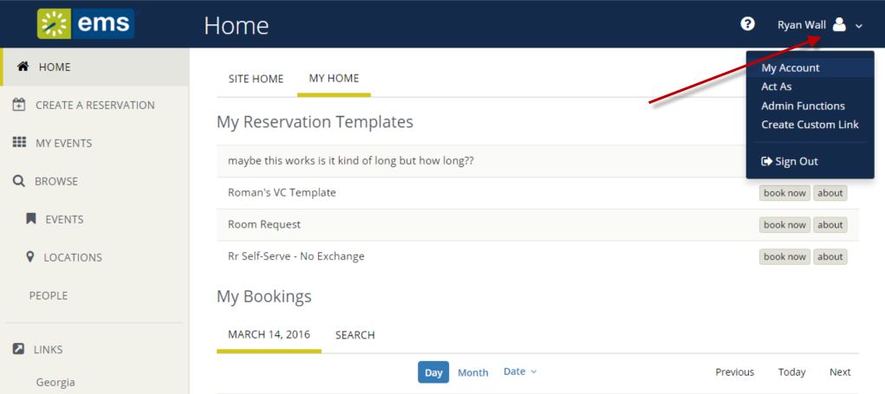

Personalizing Your Account
The My Account menu enables you to customize your user profile:
- Specify delegates. Delegates are web users who can act as you in {{product_webapp}} and carry out actions on your behalf.
- Create your own, timesaving booking templates, which set default values (Start Time, End Time, and so on) for your most frequent types of reservations and room requests. These templates appear on your personal Home Page after you save them.
- Set a list of favorite rooms to streamline your search for available space.
The My Account menu is available in the upper right corner of {{product_webapp}} next to your name once you log in.

To get started customizing your account, see:
- Creating a User Account
- Modifying your User Account
- Creating Delegate Accounts
- Setting Default Values for Room Requests and Reservations
- Creating a List of Favorite Rooms